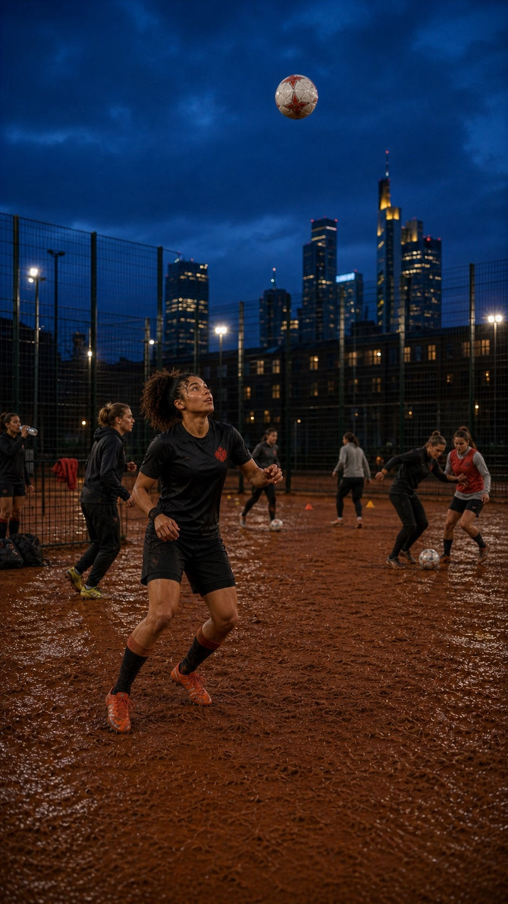

Was wir tun
Sichtbarkeit ist ein Mannschaftssport.
Wir fördern Mädchen- und Frauenfußballprojekte, stärken weibliche Fans und bringen Menschen im Fußball zusammen.

Drei Spielfelder
Auf dem Platz. Auf den Rängen. In der Stadt.
- 01
Fördern. Wir unterstützen Projekte, die Mädchen und Frauen Zugang zum Fußball eröffnen und bestehende Angebote stärken.
- 02
Vernetzen. Wir bringen Spielerinnen, Fans, Initiativen und Verbündete miteinander ins Gespräch.
- 03
Haltung zeigen. Wir positionieren uns gegen Sexismus, Rassismus, Antisemitismus und Homophobie.
Fußball gehört allen.Unsere Haltung